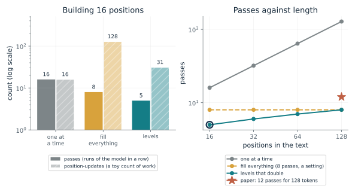
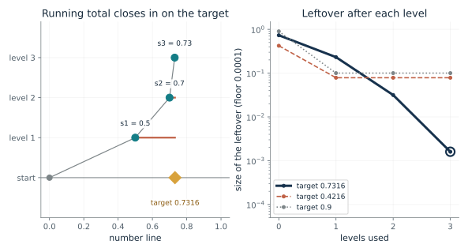
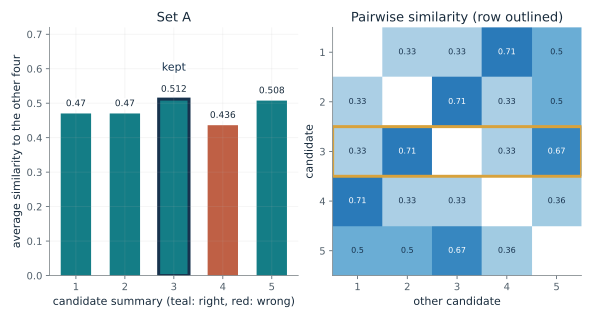
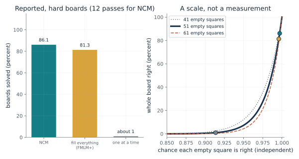
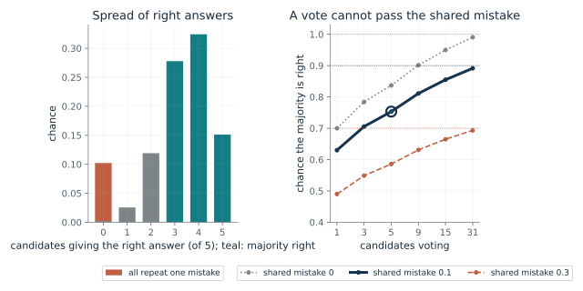
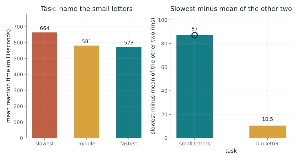

Count passes and position-updates before comparing speeds, and remember that a count is not a timing. Check whether a level can overturn an earlier one, because a stack that only adds corrections cannot undo an overshoot. When choosing among several drafts, ask whether the drafts could share a mistake, since agreement measures typicality and not truth.
“My system draws several answers and keeps the one most like the others. Does that make the kept answer correct?”
Use mmi-ch18-sketching-before-detail with the companion's AI skill package. The illustrations below also work on their own.
How many passes does it take to build a text?
From Chapter 18, A model that writes one piece at a time commits early
A 16-position text can be built one position at a time, by filling every position in several passes, or level by level. How many passes and position-updates does each take?
One at a time, each pass picks one token using everything before it, so a text takes as many passes in a row as it has tokens. Filling everything repeats a pass over all positions. Levels start with a rough version of the whole text with very few positions and each later level adds detail, so the number of passes grows with the number of levels, not with the length.
Predict first: For 16 positions and 8 fill-everything passes, predict which method makes the most position-updates and which makes the fewest.

Positions in the text: 16 · Passes of fill-everything: 8
What happens: One at a time takes 16 passes and 16 position-updates. Fill-everything takes 8 passes but 128 position-updates. Doubling levels of 1, 2, 4, 8 and 16 take 5 passes and 31 position-updates. At 128 positions the paper's real schedule is 12 passes, not the 8 that doubling would give.
A text of 16 positions takes 16 passes one at a time, 8 passes of fill-everything (128 position-updates) and 5 passes with doubling levels (31 position-updates). These are counts, not timings: real speed also depends on hardware, caching and overhead.
- Passes, one at a time
- 16
- Passes, fill everything
- 8
- Passes, doubling levels
- 5
- Position-updates, doubling levels
- 31
Writing one token per pass makes a text take as many passes in a row as it has tokens. Building in levels changes that count, which is why the method is worth studying, and the count does not say how fast any real system runs.
No brain data are involved. The chapter does not claim that people think this way.
Left-to-right decoding takes one pass per token. The Stanford model writes a 128-token text in 12 passes, each pass choosing a whole level of codes, and the authors report it ran 21 times faster than a rival at 128 passes, by their own timing.
Show the calculation
Doubling levels 1, 2, 4, 8, 16: 5 passes, 31 position-updates. Fill everything: 8 x 16 = 128. One at a time: 16 passes. For the paper's 128-token text, 12 passes against 128 gives 10.7 times fewer.
The equations and symbols
- L
- the number of positions in the text (a power of two here, for easy counting)
- pass
- one run of the model; one level is one pass
- position-update
- one position computed in one pass
Passes and position-updates would have equal costs, which they do not: actual speed and total computing also depend on architecture, caching, hardware and other overhead. The paper's levels do not double; its main Sudoku configuration begins with one, two and four codes and grows more slowly.
Check your understanding: How many passes and position-updates does a 64-position text take with doubling levels?
Book source: Chapter 18, A model that writes one piece at a time commits early. Illustration C18-D01. Formula. The chapter's invented 16-position text: 16 passes one at a time; 8 passes of fill-everything, 8 x 16 = 128 position-updates; 5 doubling levels, 31 position-updates. The other lengths and pass settings are this companion's variations. The reported 12 passes for a 128-token text and the authors' 21 times timing (against DUO at 128 passes, on one H100) are the paper's; the chapter says the doubling is only for easy counting.
Can a later level undo an earlier one?
From Chapter 18, Fix the leftover, one level at a time
A target of 0.7316 is described in three levels, each choosing one entry from a list. What are the totals and leftovers, and what happens when level 1 overshoots?
At each level the closest entry to what is still missing is added to the running total. The leftover after level k is the target minus that total, so each new leftover is the old one minus the new correction. Lists with finer steps shrink the leftover. If the first pick overshoots and the later lists contain no negative entries, nothing can pull the total back.
Predict first: For a target of 0.4216 with the chapter's lists, predict whether three levels reach it as closely as they reach 0.7316.

Levels used: 3 · Target: 0.7316 · Lists allow negative corrections: 0
What happens: For 0.7316 the totals are 0.5, 0.7 and 0.73, and the leftover falls from 0.2316 to 0.0316 to 0.0016. Now switch to the target 0.4216: level 1 picks 0.5, overshooting, and since later lists only add, the total stays at 0.5 with leftover -0.0784. Allow negative corrections and the same target ends at 0.42.
With lists of nonnegative corrections only, 3 levels bring the total to 0.73 for a target of 0.7316, leaving 0.0016. Each level removes most of what the last one missed.
- Total after the levels used
- 0.73
- Leftover (target minus total)
- 0.0016
- Last correction
- 0.03
- Overshoot that later levels cannot undo
- no
A rough-first method has to commit to something at each level. Whether later levels may overturn an earlier one decides whether early mistakes can be repaired, which is the question the Sudoku result bears on.
In the paper, each level encodes the residual left by the earlier ones, and the finer levels are cut off at random in training so that early levels carry real information. The accounting here is a specification of that idea on one number; it is not how the model chooses its codes.
Show the calculation
s_k = s_(k-1) + c_k and r_k = x - s_k. level 1: c = 0.5, s = 0.5, r = 0.2316; level 2: c = 0.2, s = 0.7, r = 0.0316; level 3: c = 0.03, s = 0.73, r = 0.0016.
The equations and symbols
- x
- the target
- k
- the level number
- c_k
- the correction chosen at level k: the list entry nearest to what is still missing
- s_k
- the running total after level k, starting at s_0 = 0
- r_k
- the leftover (residual) after level k
Each level picks the entry nearest to the leftover. With the chapter's lists, which run from 0 to 1, a later level can only add, so an overshoot at level 1 stays; the chapter notes that whether later levels can overturn an earlier one is what the Sudoku result bears on. A correction chosen by this rule is not shown to be what any model does.
Check your understanding: For target 0.9 with the chapter's lists, what does level 1 pick, and what is the leftover after three levels?
Book source: Chapter 18, Fix the leftover, one level at a time. Illustration C18-D02. Constructed example. The chapter's constructed example (not from the paper): target 0.7316, level 1 multiples of 0.5 from 0 to 1, level 2 multiples of 0.1, level 3 multiples of 0.01, giving corrections 0.5, 0.2, 0.03, totals 0.5, 0.7, 0.73 and leftovers 0.2316, 0.0316, 0.0016. The other two targets, and the option of lists that allow negative corrections, are this companion's variations.
Which draft does minimum Bayes risk keep?
From Chapter 18, Drawing several and keeping the most typical
A model writes five one-line summaries of a vote. If we keep the one most like the others, is it the right one?
For each candidate, average its similarity to the other four. The kept candidate is the one with the highest average. In set A four of five drafts are right and they resemble each other, so the typical one is right and the odd one out scores lowest. In set B three drafts say the same wrong thing and so resemble each other most.
Predict first: In set B three of five candidates share a mistake. Predict whether MBR keeps a right candidate.

Set of candidates: 1 · Candidate to examine: 3
What happens: In set B, candidate 1 scores 0.462, the highest, and it carries the shared mistake 'close the old bridge'; the two right summaries score 0.352 and 0.237. In set A, candidate 3 scores 0.512 and is right, and the wrong candidate 4 scores lowest at 0.436.
Candidate 3 agrees with the others by 0.512 on average. MBR keeps candidate 3 (0.512), which is right. Only one candidate is wrong, and it scores lowest.
- Average similarity of the selected candidate
- 0.512
- Candidate MBR keeps
- 3
- Kept candidate is
- right
- Candidates that carry the mistake
- 1 of 5
Drawing several drafts is cheap when each draw is cheap, but choosing among them by agreement only rewards what the drafts share, true or not.
No brain data are involved.
In the paper, 16 candidates on XSum raised the summary score from 28.0 to 29.6, and 12 on translation raised the BLEU score from 22.6 to 25.2. The chapter says the paper's similarity measure is not stated, and a shared mistake can win by definition.
Show the calculation
Average for candidate 3 = (0.333 + 0.714 + 0.333 + 0.667) / 4 = 0.512. Similarity = shared words / different words in either, ignoring capitals and periods.
The equations and symbols
- y_1 ... y_n
- the n candidate drafts (five here)
- sim(y_i, y_j)
- word overlap: shared words divided by the number of different words in either, ignoring capitals and periods
- i*
- the candidate with the largest average similarity to the others
- y-hat
- the candidate kept
Whether a candidate is right or wrong is set by the chapter, not computed. The method has no answer key and no outside judge. It keeps the candidate that agrees most, on average, with the others.
Check your understanding: In set A, candidate 3 scores 0.333, 0.714, 0.333 and 0.667 against candidates 1, 2, 4 and 5. What is its average?
Book source: Chapter 18, Drawing several and keeping the most typical. Illustration C18-D03. Constructed example. The chapter's two constructed sets of five one-line summaries of a bridge vote, with its word-overlap similarity. In set A candidate 4 is wrong; in set B candidates 1, 2 and 3 share the mistake 'close the old bridge'. The chapter's scores are reproduced: 0.512 for candidate 3 in set A, 0.436 for candidate 4, and 0.462 for candidate 1 in set B. The paper's own similarity measure for this step is not stated.
How did the reported Sudoku results compare, and why is one wrong square so costly?
From Chapter 18, On Sudoku, later levels corrected earlier ones
The preprint reports the share of boards solved by three kinds of model. How much per-square accuracy would those shares imply if squares were independent?
If each of n empty squares were right independently with chance p, the whole board would be right with chance p to the n. Taking the nth root of a reported solve rate gives the per-square accuracy it would need. The figure is a scale for how quickly a single early error ruins a board; real squares depend on one another.
Predict first: Predict which of the three methods needs the highest per-square accuracy to produce its hard-board result, if squares were independent.

Board difficulty: 3 · Empty squares on a board: 51
What happens: On hard boards NCM solved 86.1 percent, which would need about 99.7 percent per square across 51 squares, if squares were independent. The left-to-right model's about 1 percent would need only about 91.4 percent per square. Small per-square differences compound into large board differences.
Reported results on hard boards: NCM 86.1 percent, the best fill-everything rival about 81 and a one-at-a-time model about 1. If squares were independent, getting 51 right at NCM's rate needs about 99.7 percent per square; Sudoku squares constrain one another, so this is a scale and not a measurement.
- NCM solved (percent)
- 86.1
- Implied per-square accuracy, NCM
- 0.9971
- Implied per-square accuracy, one at a time
- 0.9137
- Boards of 81 squares with empty squares
- 51
A rough-first method that lets later levels correct earlier partial solutions is the authors' explanation for the Sudoku gap. The chapter says that explanation is a guess and that the paper reports no test isolating the cause.
No brain data are involved; the chapter says it does not claim that people solve Sudoku this way.
A left-to-right model commits to each square as it goes. The preprint's model keeps a rough picture of the whole board and sharpens it. The paper reports its Sudoku results and does not test the cause.
Show the calculation
Whole board = p^n, so p = (solved share)^(1/n). NCM: 0.861^(1/51) = 0.9971. One at a time: 0.01^(1/51) = 0.9137.
The equations and symbols
- n
- the number of empty squares (51 on the chapter's invented board with 30 given digits)
- p
- the chance each empty square is right, if squares were independent
- P(board right)
- the share of boards solved, counted only if all 81 squares are right
A board counts as solved only if all 81 squares are right. The independence assumption is false for Sudoku, where a digit in one place limits digits in many others, so the implied accuracies are a scale and not a measurement. The preprint reports one training seed and no error bars, and an outside reproduction reported 86.3 percent on 2,000 hard boards without retraining the model or reproducing the baselines.
Check your understanding: If squares were independent and 51 were empty, what per-square accuracy gives 86.1 percent of boards?
Book source: Chapter 18, On Sudoku, later levels corrected earlier ones. Illustration C18-D04. Reported result. Reported results, from the chapter: Next-Concept Modeling (NCM) solved 99.5, 96.5 and 86.1 percent of easy, medium and hard boards in 12 passes. The best fill-everything rival (FMLM+) solved about 98, 93 and 81 percent, and a left-to-right model about 14, 5 and 1. The rival numbers were copied from another group's paper. The independent-squares arithmetic is this companion's, not the paper's; the paper does not say how many boards were tested.
What can a vote among drafts never repair?
From Chapter 18, Drawing several and keeping the most typical
Majority voting over final answers is MBR with the simplest similarity. How many voters does it take, and what stops it?
When errors are independent, the majority of many candidates is right almost surely if each is right more often than not. A shared mistake is different: the candidates all say the same wrong thing, so the vote reports it with confidence. The two cases add up in proportion to their chances, so the vote's success has a ceiling of one minus the shared-mistake chance.
Predict first: At a shared-mistake chance of 0.1, predict whether 31 voters beat 0.95.

Candidates voting: 5 · Chance all candidates repeat one mistake: 0.1
What happens: With 31 voters the independent part is almost surely right, but the majority can be right only when there is no shared mistake, so it cannot pass 0.9. At shared-mistake chance 0.3 the ceiling is 0.7. More drafts help with scatter and cannot help with a repeated mistake.
Each candidate is right with chance 0.7 when the errors are independent; with chance 0.1 all of them repeat one mistake. 5 voters reach 0.753, and no number of voters can beat 0.9. This is the companion's constructed model, not a result from the paper.
- Majority right
- 0.753
- A single candidate is right
- 0.63
- Ceiling however many vote
- 0.9
A system that draws many answers from one model tends to treat agreement as evidence. How related the errors are decides whether the vote can improve on a single answer.
No brain data are involved.
Self-consistency votes over sampled final answers. In this toy the vote's ceiling is set by the chance of a shared mistake, a quantity the chapter says to ask about and does not measure.
Show the calculation
P(majority right) = (1 - 0.1) x sum from k = 3 to 5 of C(5, k) x 0.7^k x 0.3^(5 - k) = 0.753.
The equations and symbols
- n
- the number of candidate answers (odd, so a majority exists)
- a
- the chance each candidate is right when errors are independent (0.7 here)
- c
- the chance that all candidates repeat one shared mistake
Two kinds of answer (right or wrong), independent errors when there is no shared mistake, and a shared mistake that makes every candidate wrong together. Real answers from one model are related in more complicated ways.
Check your understanding: With a = 0.7, c = 0 and n = 3, what is the chance the majority is right?
Book source: Chapter 18, Drawing several and keeping the most typical. Illustration C18-D05. Constructed example. The chapter states that majority voting over final answers is MBR with similarity 1 for the same answer and 0 for a different one, that a settled tally is stable and not necessarily true, and that several answers from one model are less independent than they look (Chapter 23's sunny-window thermometers). The two-answer model with a shared-mistake chance is this companion's construction, with made-up numbers (a = 0.7, c from 0 to 0.3); it is not from the paper or from the cited work on self-consistency.
How large was the global-precedence gap in Navon's timings?
From Chapter 18, A rough whole shows up before fine detail, but not always
People named either the big letter or the small letters of a figure. In which task did the other level slow them down?
Each task has three conditions, and the chapter gives their mean times. The gap compares the slowest with the mean of the other two. Naming small letters had a large gap and naming the big letter had a small one, which is the asymmetry Navon read as the big shape coming first.
Predict first: Predict which task shows the larger gap, and whether it fits a global-first order of processing.

Task: 1
What happens: Naming the small letters, the slowest condition took 664 ms against about 577 for the others, a gap of 87 ms. Naming the big letter, the three conditions ranged from 462 to 477 ms and the chapter reports no reliable slowing. Navon read that asymmetry as the big shape coming first, with the caveat that the big letter is also larger.
When people named the small letters, one condition took 664 ms and the other two 573 and 581, a gap of about 87 ms. In the chapter, the slow one is when the big letter was a different letter. Navon noted the big letter is also simply larger, which could explain the result.
- Slowest condition (ms)
- 664
- Mean of the other two (ms)
- 577
- Gap (ms)
- 87
The studies in this chapter concern the order in which information becomes usable. The chapter says none tests a whole level of positions produced at once and then a finer level, so the link to the machine method is an analogy this book draws.
This is a reaction-time result in 14 undergraduates. In 1997 Oliva and Schyns showed that the task can flip which level dominates, and in 2021 Wiesmann and colleagues found the evidence did not support a default rough-first strategy.
The Stanford model's early levels are rough and its last level is exact. The chapter says the order in which people's information arrives is not that algorithm.
Show the calculation
Gap = slowest - mean of the other two = 664 - (581 + 573)/2 = 87 ms.
The equations and symbols
- t
- mean reaction time in milliseconds for one condition
- gap
- how much longer the slowest condition took than the average of the other two (milliseconds)
The gap is a difference of means from 14 people and says nothing about reliability, which the original reports and this companion does not compute. Navon noted that the big letter is also simply larger, which could explain the result. The study shows which information was usable faster, not what any mind experienced.
Check your understanding: For the big-letter task, what is the slowest time minus the mean of the other two?
Book source: Chapter 18, A rough whole shows up before fine detail, but not always. Illustration C18-D06. Reported result. Reported result: Navon (1977), Experiment 3, 14 undergraduates, 40 ms masked display, as the chapter lists it: 664, 573 and 581 ms when naming the small letters; 462, 471 and 477 ms when naming the big letter. The chapter says 664 against about 575 otherwise when the big letter differed. The chapter's sources do not say which of the other numbers goes with which condition, so only the slowest-minus-the-others gap is computed here, and that is this companion's summary.
Mathematical illustrations use the book's formulas with disclosed small examples. Each interactive choice shows a result computed from the same calculations as the chapter notebook. A simulation is not a measurement, and for a brain the mathematics is a model: a picture illustrates a result, and the assumptions determine its scope. Review copy, brain-computer partnership revision of 1 november 2026.